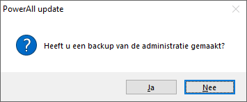
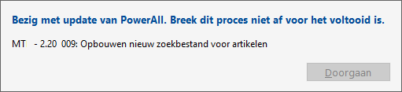
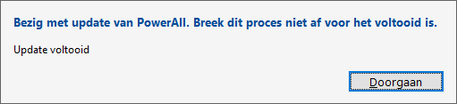

Om de administratie bij te werken, doorloopt u de volgende stappen:
-
Kies voor de knop Ja.
-
Het scherm Powerall Connect update verschijnt.
Opmerking: Indien u geen back-up heeft, maak deze via een Schaduwkopie.
-
Kies voor de knop Ja.

-

Opmerking: Normaliter verschijnt er geen foutmelding.
-
Als de update gereed is, verschijnt het scherm:

-
Kies voor de knop Doorgaan.
De administratie is bijgewerkt en kan weer gebruikt worden.